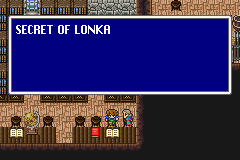

Side Quest (2)
Bal Cave
ด้านตะวันออกของปราสาท Bal จะมีถ้ำทางเชื่อมไปยังสะพาน (Big Bridge)
และภายในจะมีห้องอยู่ห้องหนึ่ง ซึ่งภายในจะมี Gil มากมาย
(หลังประตูบานนี้มี Gil มากมาย)
เดิน 1 ก้าว จะได้รับ Gil มากขึ้นเป็นทวีคูณ !!!
ก้าวแรกจะได้รับ 10 Gil ก้าวต่อไปจะได้ 20, 40, 80, 160, 320, 640, ...
จนกระทั่ง 20,480, 40,960 Gil รวมทั้งหมดจะได้รับมากถึง 81,910
Gil เลยทีเดียว
อธิบายอาจไม่เข้าใจ ลองเดินเข้าไปเอง
(ได้มาแล้ว 20,480 Gil)
แต่หากโชคร้ายจะเจอกับ
Gil Turtle (Gilgame)
Level : 51
HP : 32,768
Weakness : Ice
Gil Turtle แข็งแกร่งมาก มันสามารถโจมตีสวนกลับได้หนละ 2 ครั้ง (Counterattack)
วิธีต่อสู้ด้วย ต้องใช้ Summon Golem
ขึ้นมาป้องกันการโจมตีทางกายภาพ
และใช้เวทย์ Ice 3 โจมตีใส่ (ถ้าจะให้ดีควรถือ Ice Rod ไว้ด้วยขณะร่ายเวทย์)
อีกทั้งก่อน Gil Turtle จะตาย มันจะร่ายเวทย์ Earthquake ทิ้งทวนด้วย
เพราะฉะนั้นต้องร่ายเวทย์ "ลอยตัว" (Time Magic Floating)
ไว้ล่วงหน้าด้วย
และแน่นอนว่า หากต้องการกลับเข้ามาเก็บ Gil อีกครั้ง ก็สามารถทำได้
โดยการ "วาร์ป" ออกจากถ้ำ แล้วกลับเข้าไปใหม่
Kelb
ภายในโรงแรม หากเข้าไปคุยกับมนุษย์หมาป่าที่อยู่ในห้องนอน
เขาจะให้กินเนื้อฟรี (ฟื้นฟู HP/MP เต็ม) และแถม Potion ให้อีก 8 อันด้วย
Requiem Song
หากไปคุยกับมนุษย์หมาป่า ที่วิ่งอยู่บริเวณมุมซ้ายบนของหมู่บ้าน
เขาจะมอบ Requiem Song ให้

Corna Jar
บริเวณมุมล่างซ้ายของหมู่บ้าน จะมีบ่อน้ำ
เมื่อกดสำรวจจะเจอชายแก่คนหนึ่ง เขาต้องการกบ
(กดสำรวจ จะเจอชายแก่คนนี้มุดลงไปในบ่อน้ำ)
ให้ออกจากหมู่บ้าน เดินบริเวณรอบๆ หมู่บ้าน เพื่อหา กบสีเหลือง
เมื่อเจอให้จับมันไปให้ชายแก่
วิธีจับกบ ทำได้โดยใช้ความสามารถ Catch ของอาชีพ Mediator
โดยจะ Catch ได้ ก็ต่อเมื่อ HP ของศัตรูที่ต้องการจับเหลือน้อย
(ใช้ Learning Magic Death Claw ทำให้
HP ของศัตรูเหลือตัวเลขเพียงหลักเดียว ทำให้จับได้เลย)
นำไปให้ชายแก่ เขาจะขอแลก "กบ" ของเรา + เงิน 10,000 Gil กับ
ไหของเขา
หากตกลงจะได้รับ Corna Jar ทำให้เพิ่มโอกาสสำเร็จในการ Catch ของอาชีพ Mediator
Surgate
Speed Song

สำรวจหนังสือในห้องนอนของ Zeza
Time Magic Float
ภายในห้องสมุด หญิงคนหนึ่งจะให้ช่วยจัดเรียงหนังสือให้
เล่มแรก Secret of longka ตัว S

นำไปเก็บที่ชั้นตัว S
เล่มที่ 2 Forbidden book ตัว F
นำไปเก็บที่ชั้นตัว F
เล่มสุดท้าย Monster encyclopedia ตัว M
นำไปเก็บที่ชั้นตัว M
เสร็จแล้วไปคุยกับหญิงคนนั้นเธอจะขอบคุณ และเปิดทางลับให้
ด้านนอกนี้เดินผ่านไปทางซ้ายได้

ได้มาแล้ว Time Magic Float
Chocobo
Female
เมื่อได้เรือดำน้ำ ให้ไปยังถ้ำใต้น้ำด้านทิศตะวันตกเฉียงเหนือ
เข้าไปในถ้ำจะเชื่อมต่อไปยังป่าด้านบน ซึ่งมีป่า Chocobo อยู่ด้วย
ภายในป่าจะเจอกับ Chocobo เพศเมีย ซึ่งไม่สามารถใช้เป็นภาหนะได้
Shoat Summon Magic
ป่าใกล้ๆ กับป่า Chocobo Female จะมี Shoat อาศัยอยู่
Shoat
Level : 38
HP : 5,000
เมื่อปราบได้จะได้รับ Item Shoat เมื่อกดใช้จะได้รับ Shoat
เป็น Summon Magic